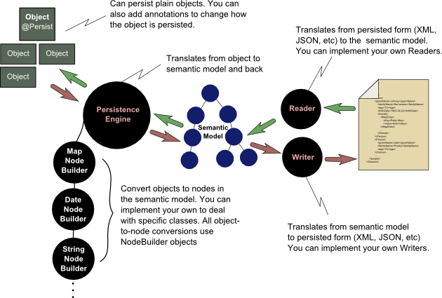

Overview
FreezeDry provides an easy mechanism for converting Java objects into a persisted form and then back again. And there is no need for creating binding files.

Version 0.2.0 adds a set of convenient classes to the FreezeDry framework that makes it much easier to persist objects and reconstituting them from their persisted form. These new classes, derived from the Persistence interface, remove the need for you to deal directly with the Persistence Engine. The Persistence classes allow a fair amount of flexibility, but if they don't meet your needs, you can still use the PersistenceEngine directly as before.
The current FreezeDry version provides the ability to convert between Java objects and XML, Java objects and JSON, and Java objects and lists of key-value pairs. In its most basic form, converting a Java object into a persisted form is as simple as:
final XmlPersistence persistence = new XmlPersistence();
persistence.write( division, "person.xml" );
And to reconstitute the division object from the "person.xml" file, all you need to do is:
final XmlPersistence persistence = new XmlPersistence();
Division redivision = persistence.read( Division.class, "person.xml" );
The approach used in version 0.1.0 is still available. In some cases you might find that the older method, although more complicated, provides more control over the transformation of objects into and persisted forms into and out of the semantic model. The code below demonstrates how to persist a Java object to an XML file by directly using the PersistenceEngine and an XmlWriter:
// create the persistence engine
final PersistenceEngine engine = new PersistenceEngine();
// create the semantic model that represents the object "division"
final InfoNode rootNode = engine.createSemanticModel( division );
// write XML to the file "division.xml"
try( PrintWriter printWriter = new PrintWriter( new FileWriter( "division.xml" ) ) )
{
final XmlWriter writer = new XmlWriter();
writer.setDisplayTypeInfo( false );
writer.write( rootNode, printWriter );
}
catch( IOException e )
{
// deal with any IO exceptions
....
}
Both approaches produces an XML file like the one below:
<?xml version="1.0" encoding="UTF-8" standalone="no"?>
<Division>
<people>
<Person>
<givenName>Johnny</givenName>
<familyName>Hernandez</familyName>
<age>13</age>
<birthDate>1963-04-22</birthDate>
<friends>
<MapEntry>
<Key>Polly</Key>
<Value>bird</Value>
</MapEntry>
...
</friends>
</Person>
<Person>
<givenName>Julie</givenName>
<familyName>Prosky</familyName>
<age>15</age>
</Person>
...
</people>
</Division>
Don't like the way the XML is mapped to your object? Well, there are ways to alter the XML mapping--either through annotations, by implementing a custom node builder, or by implementing a custom reader and writer.
In the next sections we will describe FreezeDrys design.
FreezeDry Landscape
At a high level, FreezeDry has is composed of:
- A set of Persistence classes responsible for converting between Java objects and their persisted forms.
- A Persistence Engine responsible for converting between Java objects and the Semantic Model.
- A Semantic Model composed of InfoNode objects, each of which hold information about a particular field within the object that is to be persisted or reconstituted.
- A set of NodeBuilder classes that hold detailed information about how to convert a particular Java *Class* between an object and an InfoNode.
- A set of PersistenceWriter classes, each of which take a Semantic Model and convert it to its persisted form.
- A set PersistenceReader classes, each of which read from the persisted form and convert it to a Semantic Model.
- And optionally, *annotations* that provide custom instructions to the PersistenceEngine for converting between Java objects and the Semantic Model.
FreezeDry is set up to work right out of the box for most needs. And it mostly does that. In cases where you need to customize its behavior, or where FreezeDry gets stuck, it will need your help. It really tries hard to figure out what you're trying to do, but it isn't perfect. It turns out to be easier to convert a Java object into a persisted state, such as an XML or JSON file, than converting a persisted state into a Java object. Largely this is do to the lossy nature of the persistence. For example, in JSON there isn't an elegant way to add type information to the key. And in XML, you could add an attribute type to each element. But that isn't usually considered good form. And so in both of these cases, type information is likely lost. And mostly, it is when reconstituting complex objects from persistence where FreezeDry may need help.
Persistence
FreezeDry provides an easy way to persist Java objects to XML, JSON, and lists of key-value pairs. And to be useful, it also provides an easy way to reconstitute objects from their persisted form. As shown above, you can write an object to its persisted form in one simple line of code:
new XmlPersistence().write( division, "person.xml" );
and you can also reconstitute the division object from the "person.xml" file in one simple, but more complex, line of code:
Division redivision = new XmlPersistence().read( Division.class, "person.xml" );
There are currently three Persistence classes, all of which derive from the Persistence interface. There is an AbstractPersistence class which manages the PersistenceEngine, and then there is an AbstractFileBasedPersistence class which defines and implements a read and write method for file-based actions.
| Class | Description |
|---|---|
| Persistence | The interface defining what a Persistence class must provide |
| AbstractPersistence | Manages the PersistenceEngine |
| AbstractFileBasedPersistence | Provides basic file-base read and write methods |
| XmlPersistence | Writes Java objects to XML, and reads XML back into Java objects |
| JsonPersistence | Writes Java objects to JSON, and reads JSON back into Java objects |
| KeyValuePersistence | Writes Java objects to list of key-value pairs, and reads lists of key-value pairs back into Java objects |
Each Persistence class provides access to the PersistenceEngine through which you can perform modifications in the same way as previously (see Behavior Modification). In addition, each of the concrete Persistence implementation provide customization that would typically be needed for dealing with that specified persistence form.
| Class | Customization |
|---|---|
| XmlPersistence | setDisplayTypeInfo(boolean) allows user to specify that the type info should be added to the XML elements as attributes. |
| JsonPersistence | none |
| KeyValuePersistence | setKeySeparator(...) and setKeyValueSeparator(...) allows the user to set the separator between the elements of the key, and between the key and the values. |
Behavior Modification
FreezeDry's behavior can be modified in a number ways. The four typical approaches to modifying its behavior are:
- Implementing the NodeBuilder interface or extending one of the NodeBuilder classes.
- Modifying the PersistenceEngine's default class to NodeBuilder mapping.
- Creating annotations to work in conjunction with a custom NodeBuilder and annotating the Java class that is to be persisted.
- Implementing the Reader or Writer interfaces to convert between a persistence form and the Semantic Model, or extending existing Reader or Writer classes.
The Persistence Engine
When using the FreezeDry persistence framework, you'll mostly be dealing with three classes. The PersistenceEngine, a Reader, and a Writer. The PersistenceEngine is responsible for taking a Java object, and constructing the a tree-like representation of that object called the Semantic Model. It is also responsible for converting the tree-like Semantic Model back into a Java object.
The PersistenceEngine is responsible for taking objects and their fields into and out of a Semantic Model, but to do so it needs help. Really, the PersistenceEngine doesn't, and shouldn't, know the details of how to convert a particular field into an InfoNode (and back). Rather, it should just know that it can. And the reason it can, is because it manages a set of NodeBuilder objects that do know the details. The PersistenceEngine only knows how a field (based on its class) is mapped to a specified NodeBuilder.
Object to Semantic Model
To create a semantic model from an object, you use the PersistenceEngine method:
final InfoNode createSemanticModel( final Object object )
to which you pass the object you wish to persist. Upon such a call, the PersistenceEngine will recurse through the object, and for each field construct an InfoNode that holds information about that field. To create the InfoNode, the PersistenceEngine selects a NodeBuilder based on the mapping between the *class* of the objects and their associated NodeBuilder. For example, suppose that during processing, the PersistenceEngine ran across a field was a List< String >. In the default case, the PersistenceEngine would look up the List in the mapping, and find that there is an entry for Collection, and recognize that a List is a Collection, and return the CollectionNodeBuilder. Then, when the PersistenceEngine ran across the String element, it would use a StringNodeBuilder.
To find out what class is mapped to what NodeBuilder object, you can use the PersistenceEngine method
final NodeBuilder getNodeBuilder( final Class< ? > clazz )
And to adjust the mapping you can use one of the following methods
NodeBuilder addNodeBuilder( final Class< ? > clazz, final NodeBuilder builder )
NodeBuilder removeNodeBuilder( final Class< ? > clazz )
Semantic Model to Object
To create an object from the semantic model, you use the PersistenceEngine method
Object parseSemanticModel( final Class< ? > clazz, final InfoNode rootNode )
Naturally, you may ask where the rootNode comes from. Good question. It comes from the Reader method
InfoNode read( final Class< ? > clazz, final InputStream input )
but more on that later. The key point to remember is that the by handing the PersistenceEngine a valid Semantic Model as represented by the root node of the InfoNode tree, and you also give the PersistenceEngine the *class* that the semantic model represents, you get back an object of that class type. Its as simple as that.
Semantic Model
FreezeDry's semantic model is a tree structure that is built from InfoNode objects. So if you love recursion, then you'll love the semantic model because it's all about recursion. Powerfully simple and stunningly complex. It just depends whether you're skimming the code or trying to debug it.
The InfoNode tree is a representation of the object with information about the object and all of its data, which may be other objects. When converting from an object to the semantic model, the InfoNode object will by rich with information. The Java object has it all. However, when going from a persisted form to a semantic model to an object, the InfoNode objects may only hold the persisted name of the field, and in some cases the value. In other words, in this case, the InfoNode objects may hold only a sparse amount information.
Let's take a look at what information an InfoNode holds, aside from knowing about its parent and its children.
| Field | Type | Description |
|---|---|---|
| nodeType | NodeType | enum: node is a ROOT, COMPOUND, or LEAF |
| fieldName | String | the name of the object's field this node represents |
| value | Object | the value of the field (must be a leaf node) |
| persistName | String | the persisted name of the field |
| clazz | Class< ? > | the class type of the field |
| genericParameterTypes | List< Type > | the generic type information of the field |
As a note, when creating a semantic model from a persisted form, in many cases leaf nodes may only contain the persistName and the value. Furthermore, in many cases, the root node and compound nodes may only contain the persistName. The PersistenceEngine, in conjunction with the class, using a set of default class types for instantiation, and/or field annotations, will figure out the types that it needs to instantiate.
Node Builders
NodeBuilders are responsible for creating an InfoNode from an object or field, and for creating an object or setting a field within an object when given an InfoNode.
Recall that the PersistenceEngine creates the semantic model which is composed of InfoNode objects arranged in a tree-like structure. It is the NodeBuilder objects that are responsible for creating InfoNodes from an object and its fields. The PersistenceEngine holds a mapping between the class types and the NodeBuilder to use for creating an InfoNode for that class type.
Recall that the PersistenceEngine is also responsible for creating an object from a semantic model. When creating an object from the semantic model, the PersistenceEngine also uses the NodeBuilder associated with the type represented by the InfoNode, and in cases when the InfoNode doesn't hold the type information, it finds it from the class itself.
NodeBuilder Interface
The NodeBuilder interface has
InfoNode createInfoNode( Class< ? > containingClass, Object object, String fieldName )
Object createObject( final Class< ? > clazz, final InfoNode node )
void setPersistenceEngine( final PersistenceEngine engine )
The first two methods are the methods we just mentioned. The first one creates an InfoNode from an object, providing the builder with information about the containing class and the name of the field the object represents within the containing class. The containing class information turns out to be important when dealing with structures such as
Map< String, Map< String, List< Double > >
List< Person >
The second method creates an object from an InfoNode using the class type information specified in the method. In cases where the class type is also specified in the InfoNode the default NodeBuilder implementations will use the most specified of the two specified classes. For example, it would use ArrayList if both ArrayList and List where specified.
The third method hands the NodeBuilder a PersistenceEngine. Although this may seem odd at first glance, recall that the construction of the semantic model from an object, and the construction of an object from the semantic model are done recursively. The NodeBuilder and the PersistenceEngine work hand in hand. The PersistenceEngine calls upon the NodeBuilder to create an InfoNode or an object during its recursive descent down the object structure or the semantic model. And the NodeBuilder calls back to the PersistenceEngine to create InfoNodes or objects for compound nodes. For example, suppose that during the persistence of an object, the PesistenceEngine comes across a field that is a List< Person >. In this case, it will call the CollectionNodeBuilder to create the an InfoNode representing the List. However, the CollectionNodeBuilder needs to create sub-nodes for each Person element in that list, which it doesn't know how to do. So it calls back to the PersistenceEngine to create an InfoNode for each Person it comes across. And the PersistenceEngine calls the appropriate NodeBuilder to create the InfoNode for Person (or uses default behavior to create a compound InfoNode).
AbstractNodeBuilder
The AbstractNodeBuilder implements manages the reference to the PersistenceEngine but also provides a mapping for instantiating objects for which the type is an interface or abstract. For example, suppose that your class looks like this
public class Example {
private List< Double > numbers;
...
}
When attempting to instantiate the field *numbers*, unless the InfoNode has type information that specifies that *numbers* is an ArrayList, the NodeBuilder must rely on some default mechanism to determine what class type to instantiate. The AbstractNodeBuilder provides four methods to deal with this
/**
* Adds and interface to class mapping used when constructing a collection.
* @param interfaceClass The interface
* @param concreteClass The concrete Class to use to instantiate the specified interface
*/
void addInterfaceToClassMapping( Class< ? > interfaceClass, Class< ? > concreteClass )
/**
* @return The mapping between the interfaces and the concrete classes that will be used.
*/
Map< String, String > getInterfaceToClassMapping()
/**
* Returns the concrete class for the specified interface. Or null if it doesn't exist
* @param clazz The interface for which to return the concrete class
* @return the concrete class for the specified interface. Or null if it doesn't exist
*/
Class< ? > getClassForInterface( final Class< ? > clazz )
/**
* Returns true if the interface-to-class mapping contains the specified interface;
* false otherwise
* @param clazz The interface to check
* @return true if the interface-to-class mapping contains the specified interface;
* false otherwise
*/
boolean containsInterface( final Class< ? > clazz )
Available NodeBuilders
FreezeDry comes with a set of NodeBuilder objects that deal with many of the basic types.
- NodeBuilder is the interface which all implementations must implement
- AbstractNodeBuilder contains some basic node-building utilities (see above)
- AbstractLeafNodeBuilder deals with primitive types or result in leaf nodes
- IntegerNodeBuilder for dealing with Integer and int
- DoubleNodeBuilder for dealing with Double and double
- BooleanNodeBuilder for dealing with Boolean and boolean
- StringNodeBuilder for dealing with String
- LongNodeBuilder for dealing with Long and long
- ShortNodeBuilder for dealing with Short and short
- DateNodeBuilder for dealing with Calendar dates
- AbstractLeafNodeBuilder deals with primitive types or result in leaf nodes
- CollectionNodeBuilder for dealing with collections such as List, Set, Queue, etc
- MapNodeBuilder for dealing with HashMap, LinkedHashMap, etc.
- ArrayNodeBuilder for dealing with arrays of objects such as **String[]**, **int[]**, etc
Readers and Writers
The PersistenceReader and PersistenceWriter interfaces each define one method.
public interface PersistenceWriter {
void write( final InfoNode rootNode, final java.io.Writer output );
}
The PersistenceWriter accepts the root InfoNode of the semantic model and a java.io.Writer to which to send the persisted form (such as an XML or JSON file).
public interface PersistenceReader {
InfoNode read( final Class< ? > clazz, final java.io.Reader reader );
}
The PersistenceReader accepts an java.io.Reader representing the persisted form (such as an XML or JSON file or stream), a class type that represents the class of the object to create from the persisted form, and returns the semantic model as the root InfoNode of the tree-like structure. Recall that is exactly the semantic model that the PersistenceEngine needs to parse the semantic model into an object.
FreezeDry currently provides three PersistenceReaders and three PersistenceWriters.
| Name | Persisted Form | Description |
|---|---|---|
| XmlReader | XML | reads from XML sources and produces a semantic model |
| XmlWriter | XML | writes an object to an XML persisted form |
| JsonReader | JSON | reads from JSON sources and produces a semantic model |
| JsonWriter | JSON | writes an object to a JSON persisted form |
| KeyValueReader | Key-Values | reads lists of key-value pairs produces a semantic model |
| KeyValueWriter | Key-Values | writes an object to a persisted form that is a list of key-value pairs |
Key-Value Readers and Writers
Because XML and JSON are well-documented standards, I won't discuss them here. But the Key-Value readers and writers require a description. Effectively, the lists of key-value pairs are flattened versions of a Java object, and the readers and writers can handle quite complex objects straight out of the box. For example, the output below shows what the Division object (standard FreezeDry example) looks like when persisted in a key-value form.
Division.people[0].Person.givenName = "Johnny"
Division.people[0].Person.familyName = "Hernandez"
Division.people[0].Person.age = 13
Division.people[0].Person.birthDate = 1963-04-22
Division.people[0].Person.Mood[0] = 0.000
Division.people[0].Person.Mood[1] = 0.707
...
Division.people[0].Person.Mood[9] = 0.707
Division.people[0].Person.friends{"Polly"} = "bird"
Division.people[0].Person.friends{"Sparky"} = "dog"
Division.people[0].Person.groups{"numbers"}{"one"} = "ONE"
Division.people[0].Person.groups{"numbers"}{"two"} = "TWO"
Division.people[0].Person.groups{"numbers"}{"three"} = "THREE"
Division.people[0].Person.groups{"letters"}{"a"} = "AY"
Division.people[0].Person.groups{"letters"}{"b"} = "BEE"
...
Division.people[3].Person.givenName = "Booda"
Division.people[3].Person.familyName = "Ghad"
Division.people[3].Person.age = 17
Division.months{"January"}[0] = 1
Division.months{"January"}[1] = 2
Division.months{"January"}[2] = 3
Division.months{"January"}[3] = 31
...
Division.months{"March"}[0] = 1
Division.months{"March"}[1] = 2
Division.months{"March"}[2] = 3
Division.months{"March"}[3] = 31
Division.carNames[0] = "civic"
Division.carNames[1] = "tsx"
Division.carNames[2] = "accord"
Division.collectionMatrix[0][0] = 11
Division.collectionMatrix[0][1] = 12
...
Division.collectionMatrix[2][2] = 33
Division.personMap{"funny"}.givenName = "Pryor"
Division.personMap{"funny"}.familyName = "Richard"
Division.personMap{"funny"}.age = 63
Division.personMap{"sad"}.givenName = "Jones"
Division.personMap{"sad"}.familyName = "Jenny"
Division.personMap{"sad"}.age = 45
Division.personMap{"pretty"}.givenName = "Mendez"
Division.personMap{"pretty"}.familyName = "Ginder"
Division.personMap{"pretty"}.age = 23
Keys and Values
Notice that each line has a key, followed by a separator ("="), and then followed by a value. The values in this example are simple. The keys may appear a bit complex. Notice that each key is composed of elements, which are separated by a ".".
| Separator Name | Description |
|---|---|
| Key Separator | Separates the elements of the key |
| Key-Value Separator | Separates the key from the value |
Both of these separators can be specified through code.
The elements of the key are determined by how they appear in the class. For example, notice the "Division.carNames" near the bottom of the key-value pair list. The "Division" is the class that is being persisted. And "carNames" is a field in that class, which happens to be a List< String >. The "[0]", "[1]", and "[2]" are the indexes of the element in the list, and are generated by a PersistenceRenderer that uses a Decorator. Similarly, at the bottom of the list of key-value pairs, you may notice "Division.personMap". As the name suggests, "personMap" is a Map< String, Person >.
Renderers
Renderers are responsible for expressing the objects they render as key-value pairs. And, at the same time, they are responsible for parsing the key-value pairs that adhere to their format, back into an object. For example, in the above text, near the bottom, notice the three key-value pairs that start with "Division.carNames". The CollectionRenderer knows how to take a collection (List, Set, Queue, etc) and renderer into key-value pairs (and how to parse the key-values back into a collection). As another example, the keys beginning "Division.personMap" found at the bottom of the list of key-value pairs, represent a Map< String, Person > and therefore use a MapRenderer to create these key-value pairs.
Each PersistenceRenderer also provides a method isRenderer(...) that returns true if the key-string passed to it matches the format of something that it renderers. FreezeDry provides the following renderers:
| Name | Description |
|---|---|
| PersistenceRenderer | Interface defining what a persistence renderer must have |
| AbstractPersistenceRenderer | Manages the *KeyValueBuilder* and the mapping between the types and the *Decorator*s. Also provides some come utilities needed by the renderers. |
| LeafNodeRenderer | Renders simple leaf nodes |
| MapRenderer | Used to render Maps |
| CollectionRenderer | Used for rendering Collections |
| FlatteningCollectionRenderer | Renders simple Collections as a single line value, and uses the CollectionRenderer to deal with Collections of non-leaf type object (i.e. things that aren't strings or numbers) |
Decorators
You may also notice that strings are surrounded by quotes, integers don't have decimals, and that doubles only show 3 decimal places. These decorations and formatting are achieved by Decorators. Decorators also provide an isDecorated(...) method that returns true if the string it is passed is decorated (matches its pattern) by that decorator. And if the string is decorated by that decorator, it can "undecorate" it as well.
FreezeDry provides the following out of the box:
| Name | Description |
|---|---|
| Decorator | Interface defining what a Decorator is. |
| StringDecorator | By default surrounds a string with quotes. The opening string and closing string can be specified. For example, an index has an opening string "\[" and a closing string of "\]". |
| IntegerDecorator | Formats and parses integers |
| DoubleDecorator | Formats and parse floating point numbers. By default has 3 digits to the right of the decimal point. The format can be adjusted. |
| BooleanDecorator | Formats parses booleans. |
Annotations
In some cases you may want to change the way an object or field are persisted. For example, you may want to persist a field using a specified name instead of its field name. The code below shows a snippet of the Person class. Notice the annotation above the familyName field. This annotation tells the PersistenceEngine two things. First, when creating the semantic model, set the persistName as the specified persistence name. Depending on the implementation of the Writer interface, the familyName field would then be persisted as LastName. Second, when creating an object from the semantic model, if the semantic model has a *persistName* specified, it will find the field with the associated annotation and set that field. In this case, if the InfoNode has a persistence name of LastName, the familyName field will be set.
public class Person {
...
@Persist( persistenceName = "LastName" )
private String familyName;
...
}
"But", you may wonder, "didn't you say that often when reading a persisted form into the semantic model, only the persistence name and value are specified?" And, you may question further, "Doesn't that mean that I always have to annotate the class I want to persist?" Now you're starting to get angry, "That sucks!". Well, slow down. If the InfoNode doesn't have a fieldName specified, then it will look for a field with the specified persistence name. In this way, the default behavior is to use the persistence name as the field name. But, now, you can easily override its name.
Let me back up a bit and explain the design related to annotations. There are two types of annotations used in FreezeDry. The first type is the built-in annotation Persist. And the second type are custom annotations that are specific to a NodeBuilder.
Built-In Annotations
This is used by the persistence engine, and is meant to represent common types of customizations that one would want to perform across all objects. Such as the specifying a name for the persisted field. The other customization is the class type to use to instantiate the field. As you recall, if we have a field that is of type Map< String, String >, then we may want to override the common behavior of FreezeDry that would instantiate this field as a LinkedHashMap< String, String >, and instead instantiate the field as a more simple HashMap< String, String >.
public class Person {
...
@Persist( instantiateAs = HashMap.class, persistenceName = "BuddyList" )
private Map< String, String > friends;
...
}
The Persist annotation is shown below.
@Retention( RetentionPolicy.RUNTIME )
@Target( { ElementType.TYPE, ElementType.FIELD } )
public @interface Persist {
String persistenceName() default "";
Class< ? > instantiateAs() default Null.class;
public static class Null { }
}
Notice that the retention policy states that the annotation is available at run-time, and that the targets are types and fields.
Custom Annotations
Custom annotations, the "second type", are intended to work hand-in-hand with a specific NodeBuilder. The idea is that when a NodeBuilder is creating an InfoNode from an object or field, or when the NodeBuilder is creating an object or setting a field based on an InfoNode, the annotation for that type is customizes its behavior. So the rule is that for each NodeBuilder you implement, you should create an annotation if you want to customize its behavior from the class file of the object you wish to persist or reconstitute.
The following custom annotations are already available within FreezeDry.
| Annotation | NodeBuilder | Customizations |
|---|---|---|
| PeristCollection | CollectionNodeBuilder | elementPersistName, elementType |
| PersistMap | MapNodeBuilder | entryPersistName, keyPersistName, keyType, valuePersistName, valueType |
| PersistArray | ArrayNodeBuilder | elementPersistName, elementType |
| PersistDate | DateNodeBuilder | value (represents the format) |
What's New
This section describes the larger changes. More detailed changes can be found in the README file in the file download area. Most updates will contain bug fixes and minor code refactoring.
Version 0.2.1 (from version 0.2.0)
- Fixed a small bug in the KeyValuePersistence class. The method to return the PersistenceBuider returned it from the PersistenceWriter. Modifying the mapping for the PersistenceRenderers in that PersistenceBuilder only applied to the builder for that writer. It did not modify the builder for the PersistenceReader. The PersistenceBuilder for the reader then used a different mapping, in some cases causing errors. This was a disconnect. Renamed the method, and now the user must explicitly set both (until I can find a better solution).
Version 0.2.0 (from version 0.1.0)
- Added the ability to persist Java objects into lists of key-value pairs, and to reconstitute Java objects from this persisted form. The key-value code, found in the "keyvalue" package. Because no convenient framework existed to read and writer key-value pair lists from file (such as those for XML and JSON) I built a whole set of classes to deal with that. Therefore, the "keyvalue" package contains Renderers and Decorators that allow a fair amount of easy customization. The Renderers are similar to the NodeBuilder except that they work on converting between InfoNodes and *key-value* pairs. The Decorators provide a convenient way to decorate items. For example, if a key or value is a String, then by default it would be decorated (and undecorated) by surrounding the string with quotes, by the StringDecorator. Renderers and Decorators can be extended to alter the behavior of the default FreezeDry. For example, the FlatteningCollectionRenderer changes the default behavior of the CollectionRenderer.
- Added Persistence classes as a convenience. Now you can persist objects and reconstitute them from their persisted form through the use of the Persistence classes. For example, there is an XmlPersistence, a JsonPersistence, and a KeyValuePersistence. In the FreezeDryCloud project (to be added shortly) there are Persistence classes to persist directly to S3 buckets. These can easily be extended. And the previous approach of using the PersistenceEngine is still available.
- Renamed the persistence readers and writers from Reader and Writer to PersistenceReader and PersistenceWriter, respecitively. This was done to avoid confusion with java.io.Reader and java.io.Writer.
- Changed the signature of the PersistenceReader to use java.io.Reader instead of the InputStream. And changed the signature of the PersistenceWriter to use the java.io.Writer instead of the PrintWriter.
- Changed the InfoNode to implement Copyable> InfoNode < and provide a deep copy of the semantic model (i.e. the subtree of the InfoNode on which the copy is requested)